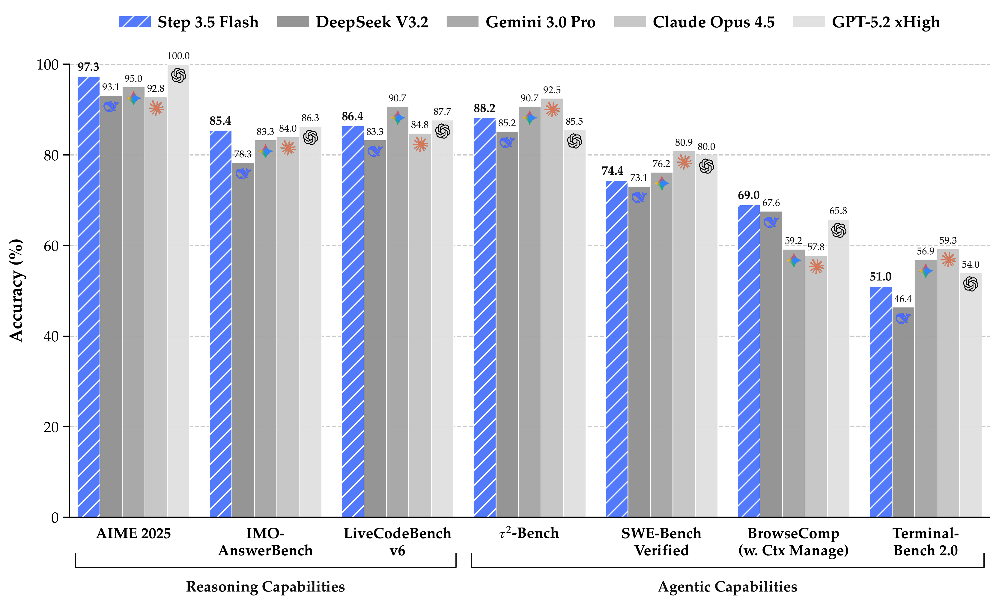
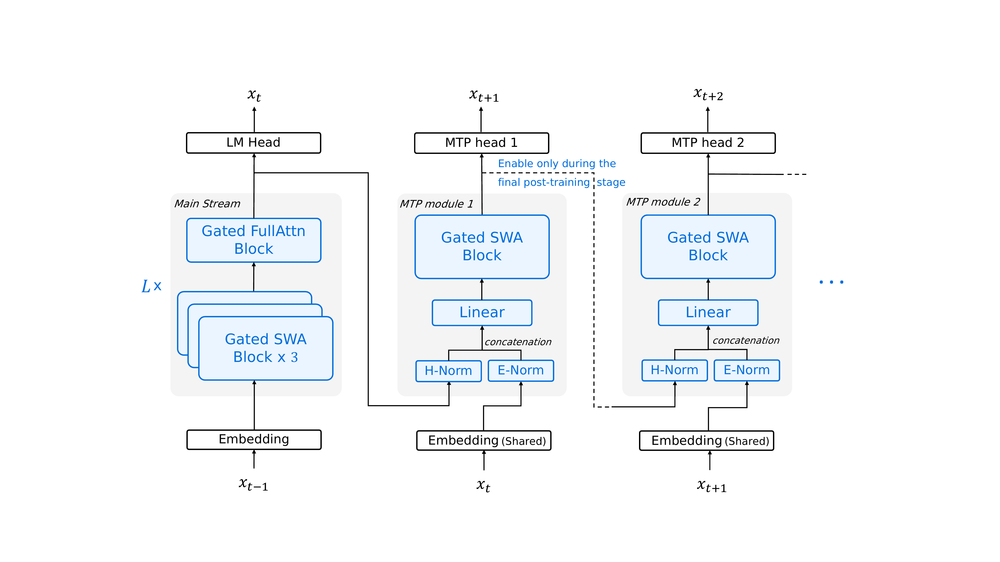
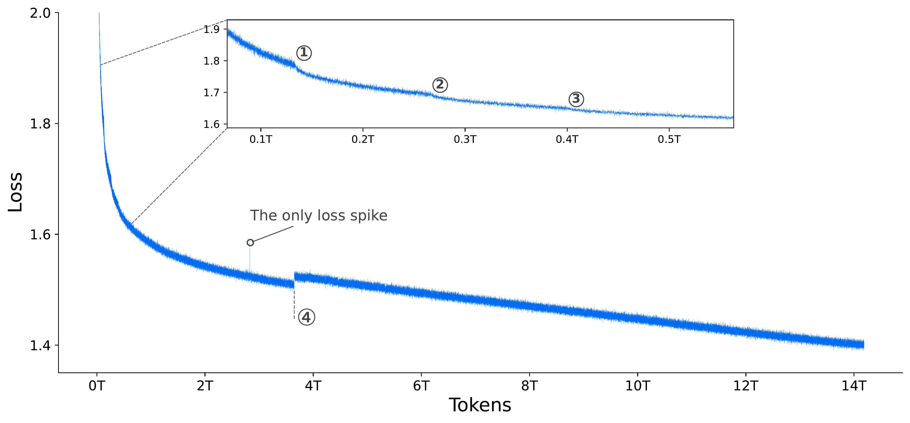
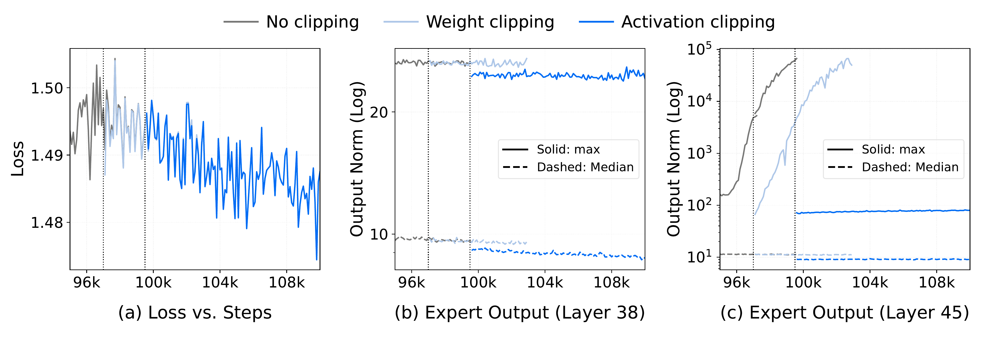
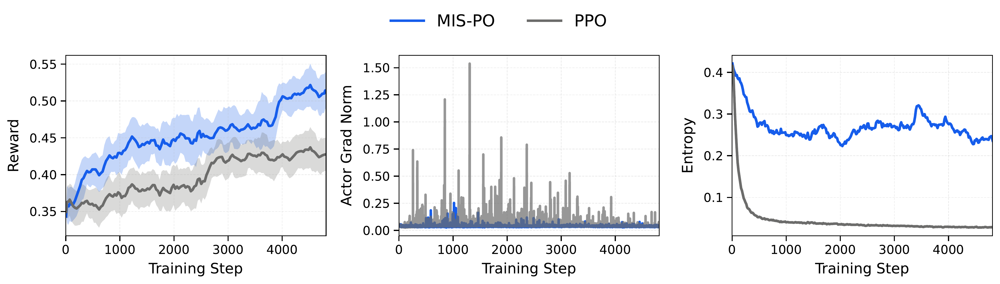

摘要（中文翻译）
我们推出了 Step 3.5 Flash，这是一个稀疏的专家混合（Mixture-of-Experts，MoE）模型，旨在弥合前沿级智能体能力与计算效率之间的鸿沟。我们在构建智能体时最关注两点：锐利的推理能力，以及快速可靠的执行能力。基于这些优先级，Step 3.5 Flash 采用 196B 参数的基础模型进行高保真建模，同时仅需 11B 活跃参数进行高效推理，并通过交错的 3:1 滑动窗口/全注意力机制和多令牌预测（MTP-3）来最小化多轮智能体交互的延迟和成本。
为了实现前沿级智能，我们设计了一个可扩展的强化学习框架，该框架整合了可验证信号和偏好反馈，同时在大规模离线训练中保持稳定，以推动数学、代码和工具使用领域的持续自我改进。
Step 3.5 Flash 在智能体、编码和数学任务上展现出强大的智能水平，在 IMO-AnswerBench 上达到 85.4%，在 LiveCodeBench-v6（2024.08–2025.05）上达到 86.4%，在 τ²-Bench 上达到 88.2%，在 BrowseComp（带上下文管理）上达到 69.0%，在 Terminal-Bench 2.0 上达到 51.0%——这些性能与 GPT-5.2 xHigh 和 Gemini 3.0 Pro 等前沿模型相当。
通过重新定义效率前沿，Step 3.5 Flash 为在真实工业环境中部署复杂智能体提供了高密度基础。
| 项目 | 内容 |
|---|---|
| 论文 ID | 2602.10604 |
| 标题 | Step 3.5 Flash: Open Frontier-Level Intelligence with 11B Active Parameters |
| 作者 | StepFun Team |
| 单位 | StepFun Team |
| 会议/期刊 | arXiv preprint |
| 原文保存位置 | ~/.openclaw/workspace/papers/20260312_Step35Flash/source/ |
| 报告生成日期 | 2026-03-12 |
开源大型语言模型（LLMs）在与闭源前沿系统在可验证任务上的性能差距正在迅速缩小，然而随着智能体系统的兴起，新的挑战也随之出现。具体而言，开源模型在复杂推理方面仍然落后于闭源前沿系统。此外，关键的效率瓶颈阻碍了它们在长上下文智能体任务中的应用，更不用说在边缘或资源受限环境中的部署了。
在设计 Step 3.5 Flash 的架构时，我们专注于两个核心方面：效率和能力。我们采用了稀疏 MoE 架构，总参数 196B，每个 token 仅激活 11B，结合 3:1 的滑动窗口注意力（SWA）与全注意力比例，以及多令牌预测（MTP-3）来降低长上下文延迟。为了在混合注意力下以最小开销提高能力，我们在 SWA 层中将查询头数量从 64 增加到 96，并使用头-wise 门控注意力。这种设计支持大规模在线部署，在 Hopper GPU 上第一周维持约 170 tokens/s 的速度。
在预训练方面，我们将稳定性作为一等要求，通过轻量级异步指标服务器和微批级连续日志构建全面的可观测性和诊断堆栈。这种基础设施能够系统地识别和缓解大规模 MoE 故障模式。我们实现了稳定的训练，使用 17.2T 高质量多样化令牌，仅出现一次瞬态损失峰值。
为了实现前沿级智能，当前后训练系统面临两个紧密耦合的挑战：一是领域特定专家自我蒸馏的迭代效率低下，二是强化学习在 MoE 模型长 horizon 推理中的可扩展性有限。为了解决这些挑战，我们提出了一个统一的大规模 RL 后训练方案，该框架在领域特定的专业化和全局综合之间交替实现。
我们引入了 Metropolis Independence Sampling-Filtered Policy Optimization（MIS-PO），用离散分布过滤替代连续重要性加权。通过将优化限制在稳定信任区域内的样本，MIS-PO 大幅降低了梯度方差，同时保留了有效的学习信号，使 RL 能够可靠地扩展到长 horizon 推理和智能体行为。

图 1：Step 3.5 Flash 概览图
:::
Step 3.5 Flash 的架构反映了模型-系统协同设计的范式转变。除了传统的智能和成本目标外，自主智能体时代提升了第三个关键约束：推理延迟。在交互式智能体工作流中，最小化延迟直接转化为任务完成时间的减少，或者相反，允许在固定时间预算内通过测试时扩展增加智能。
智能体工作负载通常表现出独特的特征：大量上下文预填充 followed by 长时间的多轮交互式解码。因此，我们沿着三个耦合轴为 Step 3.5 Flash 设计低壁钟延迟：
为了加速预填充，我们采用混合注意力机制来减轻长上下文处理的二次复杂度。对于解码，我们优先考虑与投机解码的架构兼容性。
滑动窗口注意力（SWA）：我们选择 SWA 而非线性注意力来最大化解码效率。虽然两者都具有线性复杂度，但线性注意力的状态更新机制使高效的草稿树生成和并行树验证变得复杂。相比之下，SWA 保持标准注意力语义，并且通过 KV 掩码天生易于并行验证。此外，我们发现窗口大小 W=512 的 SWA 在内核效率和捕获局部依赖之间取得了有利的平衡。
硬件对齐的分组查询注意力（GQA-8）：针对在标准 8-GPU 服务器节点上部署，我们将模型配置为 8 个 KV 头（GQA-8）。这使 KV 缓存分片与 8 路张量并行对齐，并改善了内存访问模式。
在 Feed-Forward 方面，我们采用细粒度 MoE 来降低平均 FFN 计算同时保持容量。我们使用专家并行（EP）来支持可扩展部署。然而，在 EP 下，端到端延迟可能由路由不平衡引起的掉队者主导：token 分配偏斜将工作负载集中在少数专家及其托管 GPU 上，在同步点导致吞吐量节流。因此，我们引入了 EP-Group Balanced MoE Routing 策略。
为了进一步降低自回归延迟，我们将多令牌预测（MTP）作为投机解码的补充手段。为了保持投机轻量级，我们通过利用 SWA 和密集 FFN 来简化 MTP 头。
我们将模型大小限制在 200B 参数以下，能够在高端工作站的 128GB 内存预算内进行高性能推理。

图 2：Step 3.5 Flash 架构说明。该模型使用头-wise 门控注意力，包含一个前置全注意力层 followed by L=11 个混合块，每个块交错 3 个滑动窗口注意力（SWA）层与 1 个全注意力层。我们全程应用以零为中心的 RMSNorm。前三个块使用密集 FFN；后续块使用稀疏 MoE FFN。MTP 模块使用 SWA 和密集 FFN。为控制开销，仅在主训练期间训练 MTP 模块 1；MTP 模块 2–3 从中克隆并在轻量级最终阶段联合微调。
:::
如上图所示，Step 3.5 Flash 采用 45 层稀疏-MoE Transformer 骨干网（3 个密集层和 42 个 MoE 层），配以专门的混合注意力层布局。每个 MoE 层包含 288 个路由专家加一个共享专家，每个 token 激活 top-k=8 个专家。该配置保持了广泛的知识容量（196B 总参数），同时将每 token 激活限制在仅 11B，确保推理延迟足够低以支持高度响应的智能体交互。
为了平衡长上下文效率与健壮的远程连接，Step 3.5 Flash 采用 3:1 比例（SWA: 全）的交错注意力布局。然而，我们发现 naive 交错策略在各种基准测试中持续表现不如密集注意力基线。为了弥补这一性能差距，我们利用两个补充增强：
增加 SWA 查询头数量：使用更高的查询头数量（从 64 到 96）有效地缓解了从统一全注意力架构过渡到 S3F1 布局时通常观察到的性能下降。
头-wise 门控注意力：naive SWA 的一个局限性是，当输入窗口中没有有用信息时，无法有效吸收未使用的注意力权重。之前的工作引入了可学习的、数据独立的 sink tokens 来解决这个问题。我们选择了一种不同的方法，集成参数高效的头-wise 门控机制，可以视为集成数据依赖的 sink tokens。
我们使用无损失负载均衡来鼓励跨专家的全局 token 平衡。然而，这种方法不能保证在微批级别跨 EP 等级的均衡负载，可能导致掉队者和吞吐量降低。因此，我们引入了显式促进统一等级级利用的 EP 级均衡损失。
EP 将专家 E 划分为 G 个不相交的组 {E_g}。对于 token t，令 S_t 表示 top-K 专家（掩码 s_{t,e}=1[e∈S_t]），p_{t,} 表示路由概率，则 EP 负载均衡损失 L_EP 为：
$$p_e = \frac{1}{T}\sum_{t=1}^{T} p_{t,e}$$ $$f_e = \frac{1}{TK}\sum_{t=1}^{T} s_{t,e}$$ $$p_g = \sum_{e\in\mathcal{E}_g} p_e$$ $$f_g = \sum_{e\in\mathcal{E}_g} f_e$$ $$\mathcal{L}_{\mathrm{EP}} = G\sum_{g=1}^{G} f_g\,p_g$$
为了加速长上下文智能体工作负载上的投机解码，我们附加了三个轻量级多令牌预测（MTP）头。每个 MTP 头由一个 SWA 和一个密集 FFN 组成，仅增加 0.81B 参数（约 0.41%）。我们通过预测偏移量索引这些头：对于 h∈{1,2,3}，MTP-h 预测 token x_{t+1+h}。为控制训练开销，我们在大多数训练阶段仅激活和优化 MTP-1。
我们进行了大量实验来验证 Step 3.5 Flash 中的关键设计选择，重点关注：
我们通过完整管道（1.4T-token 预训练 followed by SFT）训练 30B-A3B 模型，以评估混合注意力对推理和长上下文性能的端到端影响。
| 布局 | SWA 头 | 相对 FLOPs | 预训练平均 | 推理 | 数学 | 代码 | 科学 | 一般 | 长上下文 | 平均 |
|---|---|---|---|---|---|---|---|---|---|---|
| FFFF | 32 | ~2.68/2.90 | 54.1 | 40.8 | 40.9 | 19.6 | 42.7 | 26.5 | 28.8 | 33.2 |
| S1F1 | 32 | ~1.58/1.65 | 54.6 | 42.1 | 42.3 | 19.3 | 44.5 | 26.8 | 29.6 | 34.1 |
| S3F1 | 32 | 1.00/1.00 | 53.6 | 40.2 | 40.4 | 18.9 | 42.4 | 25.4 | 27.5 | 32.5 |
| S3F1+Head | 48 | ~1.01/1.02 | 55.7 | 40.6 | 40.3 | 18.3 | 44.0 | 26.0 | 28.2 | 32.9 |
表 1：30B-A3B 上下游结果。S3F1+Head 配置在预训练期间已经超越 FFFF（55.7 vs 54.1），并在后训练后保持竞争力。
| 方法 | BBH | MMLU | GPQA | MBPP | C-EVAL | CMMLU | 平均 |
|---|---|---|---|---|---|---|---|
| Sink Token | 70.6 | 65.1 | 27.2 | 61.2 | 76.2 | 74.6 | 62.5 |
| Head-wise Gate | 73.7 | 67.0 | 28.1 | 62.6 | 77.9 | 77.1 | 64.4 |
表 2：在 100B-A10B MoE 上 S3F1 布局的预训练评估。头-wise 门控持续改进质量，平均性能从 62.46 提升到 64.43（+1.97）。
Step 3.5 Flash 在大规模集群上进行训练，使用 4,096 个 NVIDIA H800 GPU。每个节点包含 8 个 GPU，通过 NVLink 和 NVSwitch 实现高带宽节点内通信。对于节点间连接，集群依赖 8×200 Gbps RoCE 链路来维持大规模的高效同步和数据交换。
Step 3.5 Flash 的训练由内部 Steptron 框架提供支持，这是一个基于 PyTorch 和 Megatron-LM 构建的轻量级高性能系统。Steptron 统一了完整的模型开发管道，支持大规模预训练、后训练和强化学习工作负载。
Step 3.5 Flash 采用混合并行策略，包括 8 路流水线并行（PP）和虚拟流水线阶段（VPP）、8 路专家并行（EP）和 ZeRO-1 数据并行（DP）。
遵循 Megatron-Core，我们实现了允许注意力和 MoE 模块使用不同并行策略的解耦并行方案。我们为它们分配独立的并行组，并在每个模块的相应数据并行组内执行梯度归约和缩放。
解耦注意力和 MoE 的并发 DP 通信流可能会使 RoCE 链路饱和，导致 DP 开销大幅增加。为此，我们提出两种互补的通信优化：1）fabric-aware 通信调度：将 DP 流量分区为节点内 NVLink 和节点间 RoCE 阶段，并进行流水线处理以充分利用两种 fabric。2）通信感知 rank 放置：使用作业级通信 profile 跨交换机放置 ranks，减少跳数并将重流量从交换机间热点引开。
Muon 需要完整的每参数梯度进行 Newton-Schulz 正交化，这与 ZeRO-1 跨 DP ranks 分散参数梯度的 reduce-scatter 冲突。我们改为将整个参数分配给 DP ranks，并将梯度缓冲区重新打包为 rank-major 缓冲区，这样单个 reduce-scatter 将每个参数的完整梯度传递给其所有者。
我们还应用了内核级优化来提高训练效率。在注意力中，我们将 QK 归一化与 RoPE 融合。在 MoE 中，我们将多个小操作符融合以减少内核启动开销和内存流量，并实现融合的 MoE gather/scatter 与分组 GEMM。
我们的训练框架支持细粒度激活重计算，具有每层、子模块级切换，使我们能够仅对最内存密集的组件进行选择性重计算，以最小开销减少峰值内存。
我们收集了一套全面的指标进行细粒度训练监控。然而，遥测规模巨大：4,096-GPU 工作负载每轮迭代产生近 600 万条消息。为了缓解这一问题，我们开发了轻量级指标服务器来将遥测处理与训练路径解耦。
训练稳定性是大规模稀疏 MoE 预训练的一等要求。为了使稳定性可操作，我们基于轻量级异步指标服务器和微批级连续日志构建了全面的可观测性和诊断堆栈。

图 3：Step 3.5 Flash 的逐步训练损失，绘制时未进行平滑或子采样。我们观察到整个训练过程中仅有一个孤立的损失峰值。
:::
在实践中，我们发现三个主要不稳定性：
通过这些诊断指导的缓解措施，预训练损失在整个运行过程中保持平滑，仅出现一次损失峰值。
Muon 通过 Newton-Schulz（NS）迭代近似半正交更新方向。我们采用 Polar Express 迭代并进行固定 T=6 步以平衡优化质量和吞吐量。然而，我们偶尔会观察到急剧的、不可恢复的损失峰值。模拟表明 bfloat16 Polar Express 在某些更新统计下可能产生极端中间异常值。因此，我们仅将 Polar Express 迭代（状态和中间值）转换为 float16，同时保持训练的其余部分为混合精度。
专家崩溃也可能表现为即使路由调度保持稳定也会出现专家侧病理，即专家激活消失和专家参数范数停滞或衰减。
我们观察到两个特别有影响的因素：1）路由专家聚合需要显式缩放；2）微批平衡在细粒度稀疏下可能过于严格。我们建议监控专家侧信号，包括每专家激活范数和参数范数。

图 4：专家激活稳定性和缓解策略分析。在面板（b）–（c）中，实线表示最大专家输出范数，虚线表示中位数。(1) 深度依赖的不稳定性：虽然训练损失在不同方法之间看起来相同（面板 a）且中间层保持稳定（例如，层 38 在面板 b），但最终层（即层 45）在无剪裁基线中遭受灾难性范数爆炸。(2) 缓解：权重剪裁只是延迟了这种爆炸。相反，激活剪裁有效地约束了最大范数，确保所有层的稳定性。
:::
我们发现激活范数的中位数到最大值比率是监控训练稳定性的稳健且必要的指标。
训练过程从广泛的开放领域覆盖逐步发展到日益智能体化和长上下文专业化。我们首先在 4k 上下文上进行预训练，然后退火到更高质量的知识和更多软件开发数据，同时将上下文窗口扩展到 32k。随后，专门的中间训练阶段将上下文窗口从 32k 扩展到 128k。
我们的语料库结合了通用开放领域数据和智能体导向数据。
在本节中，我们介绍了一个统一的大规模强化学习后训练方案，该方案从统一的监督微调（SFT）模型开始。该框架通过结合可验证奖励信号和人类偏好反馈实现一致的自我改进，同时即使在 MoE 模型的大规模离线训练中也能保持稳定。
我们采用两阶段 SFT 管道来为后续 RL 建立稳健的基础。第一阶段执行大规模多领域 SFT，涵盖数学、代码、STEM、逻辑、通用 QA、代码智能体、工具使用、搜索智能体和长上下文理解。第二阶段通过注入分布外信号明确最大化推理密度。
在领域特定 RL 之后，我们将发散的专家能力综合到一个统一的学生模型中。在此阶段，专家模型使用与第一阶段 SFT 语料库共享的 prompt 分布生成高质量轨迹，提供比直接 RL 集成更稳定和高效的替代方案。
在 LLM 的 RL 中，我们优化策略 π_θ 以最大化轨迹上的终端奖励。然而，对于推理任务，这个过程面临由高梯度方差引起的严重不稳定性，这由极长的时间范围和模型规模进一步放大。
为了应对这些稳定性挑战，我们提出了 MIS-PO，这是一种受 Metropolis Independence Sampling 启发的方法。我们将推理策略视为提议分布，将训练策略视为目标，将更新限制在足够接近目标分布的样本上。
与重要性采样不同，MIS-PO 应用二元掩码来过滤分布外的样本，并将保留的轨迹视为有效策略内：
$$\mathcal{L}_{actor} = - \mathbb{E}_{\tau \sim \pi_{\theta_\text{vllm}}} \left[ \mathbb{I}(x_t) \cdot \mathbb{I}(\bar{\rho}(\tau)) \cdot \log \pi_\theta(a_t|s_t) \cdot \hat{A}_t \right]$$
图 5：MIS-PO 与 PPO 在我们内部模型上的可扩展性比较。(1) 效率：MIS-PO 表现出更高的样本效率，以加速收敛趋势实现更高的奖励平台期。(2) 稳定性：MIS-PO 通过抑制梯度噪声和消除策略梯度范数中的大峰值显著稳定训练动力学。(3) 探索持续性：MIS-PO 表现出更慢的熵衰减， enable 更好的探索-利用平衡。
:::
将零奖励分配给被截断的轨迹会将截断与任务失败混为一谈。为了解决这个问题，我们将零奖励替换为最终状态的引导值估计。
我们提出路由置信度（Σ_k）作为稳定性的代理，它是激活专家的平均概率质量。初步实验确定了独特的稳定性相变：低路由置信度的模型很脆弱，需要极端稳定化；而高路由置信度的模型保持稳健，实现无需复杂干预的离线训练。
我们将 RL 框架解耦为可验证奖励的 RL（RLVR）和非可验证奖励的 RL。
对于 RLVR，每个 prompt 与一个特定于任务的验证器配对，该验证器输出奖励。基于规则的检查器用于逻辑、指令遵循和代码，而基于模型的验证器用于 STEM 任务。
我们使用成对生成奖励模型（GenRM）处理非可验证任务。GenRM 是一个推理模型，输出表示响应获胜可能性的置信度分数。
搜索任务使用基于 LLM 的实体匹配分数进行评估。对于报告生成，基于规则的 LLM 法官评估研究查询、规则规范和候选报告，产生三元判断。
我们通过聚合开源数据、合成生成和用户轨迹构建了一个多样化且难度平衡的 prompt 池。结果数据集包含 871k 样本（7.23B 令牌）。
| 领域 | 样本数 | 令牌数 | 语料库贡献 |
|---|---|---|---|
| 数学 | 68,055 | 0.98B | 11.19% |
| 代码 | 86,421 | 1.23B | 21.10% |
| STEM | 120,399 | 0.55B | 6.31% |
| 逻辑 | 93,323 | 0.81B | 13.87% |
| 通用 | 314,495 | 0.80B | 9.16% |
| 代码智能体 | 37,240 | 0.90B | 17.70% |
| 工具使用 | 114,507 | 0.76B | 8.72% |
| 搜索智能体 | 20,256 | 0.50B | 8.75% |
| 长上下文 | 15,565 | 0.70B | 4.00% |
| 总计 | 870,687 | 7.23B | 100.00% |
表 3：第一阶段 SFT 数据统计。
关于推理模板，我们评估了三种管理策略。我们采用选择性保留策略：仅保留由最新用户指令触发的工具使用轨迹的推理痕迹。
关于工具使用模板，我们比较了 JSON 和 XML 格式。XML 格式允许扁平字符串输出，语法开销显著更低。因此，我们选择 XML 格式以确保复杂真实世界智能体编码场景中的鲁棒性。
我们集成的架构专注于可扩展会话管理和跨框架泛化，以促进高吞吐量智能体编码。核心是专有会话路由器，通过 Kubernetes 编排容器生命周期并通过 Tmux 确保交互一致性。
我们在涵盖各种能力的基准测试集上评估 Step 3.5 Flash：
| 基准测试 | 激活参数 | 总参数 | Step 3.5 Flash Base | MiMo-V2 Flash Base | DeepSeek V3.2 Exp Base | Kimi-K2 Base |
|---|---|---|---|---|---|---|
| 一般 | 11B | 196B | ||||
| BBH (3-shot) | 88.2 | 88.5 | 88.7 | 88.7 | ||
| MMLU (5-shot) | 85.8 | 86.7 | 87.8 | 87.8 | ||
| SimpleQA (5-shot) | 31.6 | 20.6 | 27.0 | 35.3 | ||
| 数学 | ||||||
| GSM8K (8-shot) | 88.2 | 92.3 | 91.1 | 92.1 | ||
| MATH (4-shot) | 66.8 | 71.0 | 62.5 | 70.2 | ||
| 代码 | ||||||
| HumanEval (3-shot) | 81.1 | 77.4 | 67.7 | 84.8 | ||
| MBPP (3-shot) | 79.4 | 81.0 | 75.6 | 89.0 |
表 4：预训练评估结果节选。尽管仅激活 11B 参数（196B 总参数），Step 3.5 Flash 在一般基准测试中保持广泛竞争力，展示了强大的准确率-效率权衡。值得注意的是，Step 3.5 Flash 在 SimpleQA 上达到 31.6%，超越 DeepSeek-V3.2 Exp Base（27.0%），同时仅使用 196B 总参数对比 671B（约为总参数的三分之一）。
我们评估 Step 3.5 Flash 在代表性基准测试上的表现，包括推理导向的 HLE、MMLU-Pro、GPQA-Diamond、AIME 2025、HMMT、IMO-AnswerBench；编码相关的 LiveCodeBench-v6、CF-Div2-Stepfun、SWE-Bench Verified、SWE-Bench Multilingual；智能体系列的 τ²-Bench、Terminal-Bench 2.0、GAIA、BrowseComp、xbench-DeepSearch、BrowseComp-zh 和 ResearchRubrics；一般相关的 ArenaHard v2、IFBench 和 MultiChallenge；以及长上下文相关的 LongBench v2、MRCR、FRAMES 和 RepoQA。
我们进一步采用 并行协调推理（PaCoRe） 范式研究 Step 3.5 Flash 在推理、一般和长上下文基准上的测试时缩放特性。
| 基准测试 | Step 3.5 Flash (Vanilla) | Step 3.5 Flash (PaCoRe) | MiniMax M2.1 | MiMo V2 Flash | GLM-4.7 | DeepSeek V3.2 | Kimi K2.5 | Gemini 3.0 Pro | Claude Opus 4.5 | GPT-5.2 xHigh | |----------|--------------------------|-------------------------|--------------|---------------|---------|---------------|-----------|----------------|-----------------|---------------| | 推理 | | | | | | | | | | | AIME 2025 | 97.3 | 99.9 | 83.0 | 95.1 | 95.7 | 93.1 | 96.1 | 95.0 | 92.8 | 100.0 | | HMMT 2025 Feb. | 98.4 | 100.0 | 71.0 | 95.4 | 97.1 | 92.5 | 95.4 | 97.5 | 92.9 | 99.4 | | IMO-AnswerBench | 85.4 | 88.8 | 60.4 | 80.9 | 82.0 | 78.3 | 81.8 | 83.3 | 84.0 | 86.3 | | LiveCodeBench-v6 | 86.4 | 88.9 | 75.4 | 81.6 | 84.9 | 83.3 | 85.0 | 90.7 | 84.8 | 87.7 | | 代码智能体 | | | | | | | | | | | SWE Verified | 74.4 | - | 74.0 | 73.4 | 73.8 | 73.1 | 76.8 | 76.2 | 80.9 | 80.0 | | Terminal-Bench 2.0 | 51.0 | - | 47.9 | 38.5 | 41.0 | 46.4 | 50.8 | 56.9 | 59.3 | 54.0 | | 一般智能体 | | | | | | | | | | | BrowseComp (w. Ctx) | 69.0 | - | 62.0 | 58.3 | 67.5 | 67.6 | 74.9 | 59.2 | 57.8 | 65.8 | | GAIA | 84.5 | - | 64.3 | 78.2 | 61.9 | 75.1 | 75.9 | 76.6 | 76.1 | 83.5 | | τ²-Bench | 88.2 | - | 86.6 | 84.1 | 87.4 | 85.2 | 85.4 | 90.7 | 92.5 | 85.5 | | 一般 | | | | | | | | | | | Arena-Hard-v2.0 | 74.0 | 93.1 | 63.1 | 68.2 | 73.1 | 66.0 | 85.8 | 81.7 | 76.7 | 80.6 | | 长上下文 | | | | | | | | | | | LongBench v2 | 57.5 | 62.0 | 53.9 | 60.6 | 59.1 | 58.4 | 61.0 | 70.0 | 67.8 | 62.4 |
表 5：后训练评估结果（节选）。尽管仅激活 11B 参数（196B 总参数），Step 3.5 Flash 在广泛的任务范围内展示强大性能，在推理密集型基准测试（如 AIME 2025、HMMT、IMO-AnswerBench、LiveCodeBench-v6）上表现尤为出色。
Step 3.5 Flash 实现了前沿级智能，但目前需要比 Gemini 3.0 Pro 更长的生成轨迹才能达到相当的质量。下一步我们将在保持竞争力的同时剪裁和压缩思维过程以提高效率。
我们的目标是将通用多功能性与深度领域专业知识统一起来。为了高效实现这一点，我们正在推进策略内蒸馏的变体，允许模型以更高的样本效率内化专家行为。
虽然 Step 3.5 Flash 在学术智能体基准测试上展示了竞争性能，但智能体 AI 的下一个前沿需要将 RL 应用于专业工作、高级工程和科学研究中发现的复杂专家级任务。
Step 3.5 Flash 专为编码和工作中心任务量身定制，但在分布偏移时可能经历Reduced稳定性。这通常发生在高度专业化领域或长时间、多轮对话中，模型可能表现出重复推理、混合语言输出或时间和身份感知的不一致性。
高效的前沿级智能体模型：通过稀疏 MoE 架构（196B 总参数/11B 活跃参数）实现了与 GPT-5.2 xHigh 和 Gemini 3.0 Pro 相当的性能，显著降低了推理成本。
创新的混合注意力设计：提出了 3:1 SWA/全注意力的交错布局，结合增加 SWA 查询头和头-wise 门控注意力，在保持低延迟的同时弥补了性能差距。
MIS-PO 强化学习框架：提出了 Metropolis Independence Sampling-Filtered Policy Optimization，有效解决了大规模 MoE 模型在长 horizon 推理任务中的训练不稳定问题。
完整的智能体基础设施：构建了包含代码智能体、搜索智能体、工具使用的完整数据和训练框架。
卓越的基准测试表现：在 IMO-AnswerBench (85.4%)、LiveCodeBench-v6 (86.4%)、τ²-Bench (88.2%)、Terminal-Bench 2.0 (51.0%) 等基准测试上取得了领先成绩。
Token 效率：需要更长的生成轨迹才能达到与 Gemini 3.0 Pro 相当的质量。
分布偏移下的稳定性：在高度专业化领域或长时间对话中可能出现不稳定。
混合语言输出：可能出现语言不一致的问题。
工业级智能体部署：高效推理能力使其适合在真实工业环境中部署复杂智能体。
代码生成与调试：在 SWE-Bench Verified 上达到 74.4% 的性能，适用于软件开发自动化。
长上下文推理：支持 128k 上下文，适合长文档分析和复杂推理任务。
工具使用与自动化：在 BrowseComp 和 Terminal-Bench 上表现优异，适用于自动化工作流。
模型压缩：通过知识蒸馏和模型剪裁提高 token 效率。
强化学习扩展：将 RL 应用于更复杂的开放世界智能体任务。
多语言支持：改善非英语输出的稳定性和一致性。
报告生成日期：2026-03-12 论文位置：~/.openclaw/workspace/papers/20260312_Step35Flash/